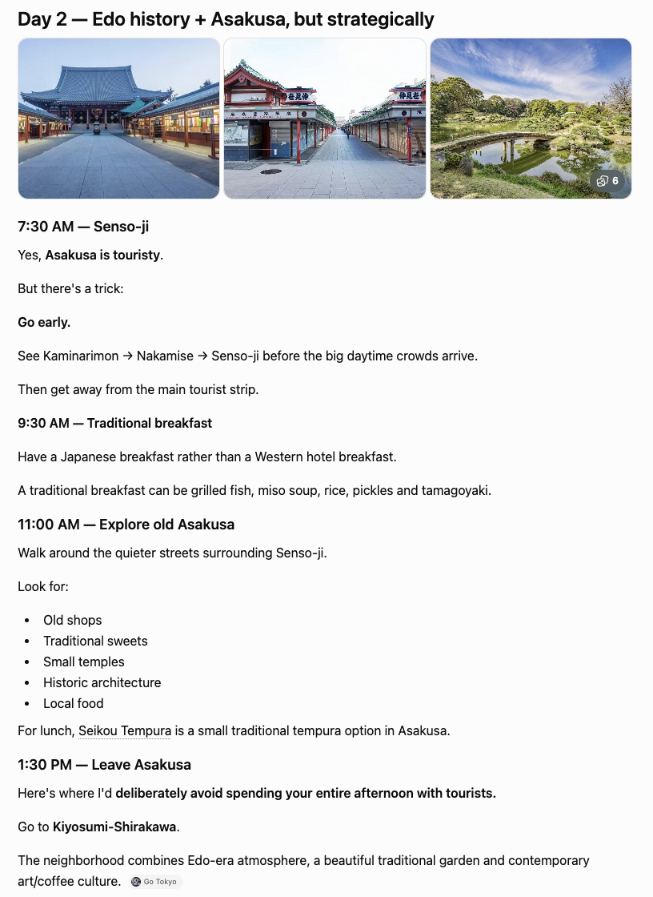
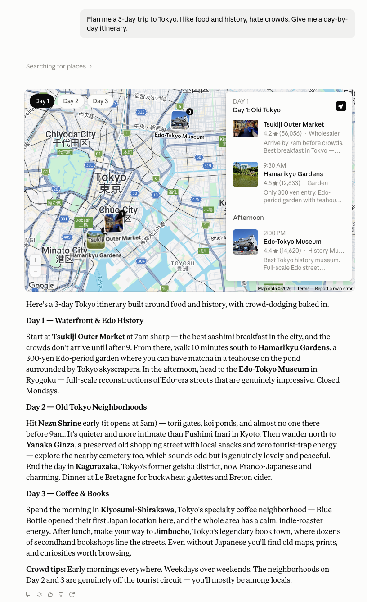
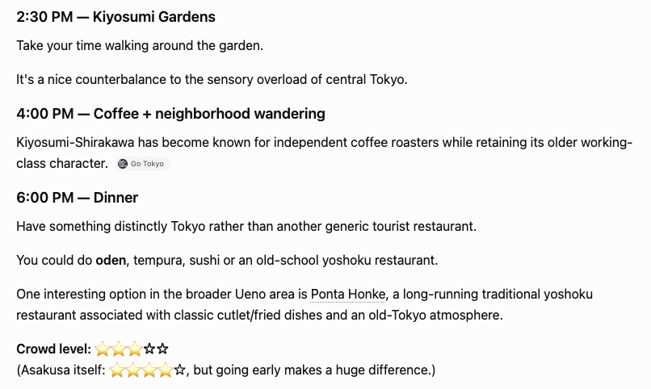
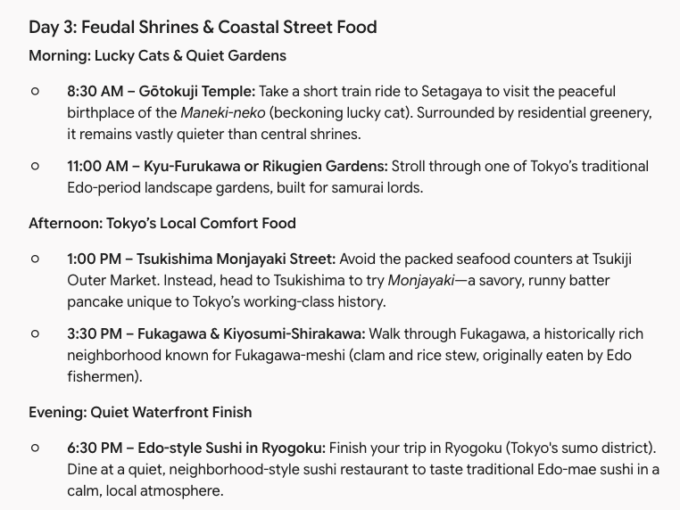

Same request: food, history, no crowds. All three avoided the tourist traps — but one gave a live map, one wrote a real guide, and one taught the most history.
"Plan me a trip" is one of the fastest-growing things people ask AI to do — and a genuinely hard test. A good itinerary needs real places, a realistic pace, and it has to actually listen to what you asked for. So I gave ChatGPT, Claude, and Gemini the same specific request and compared the results.
The most important thing to check was the hardest part of the prompt: "hate crowds." It would be easy for an AI to ignore that and hand you Shibuya, Harajuku, and the busiest parts of Asakusa. The encouraging result — all three took it seriously. Every one of them steered toward Tokyo's quiet old shitamachi (downtown) neighborhoods like Yanaka, Nezu, and Kagurazaka instead of the tourist-packed hotspots. They understood the assignment. Where they differed was in depth, data, and how each one presented the plan.
ChatGPT did something the others could not: it pulled in live place data and plotted the itinerary on an interactive map, day by day.

Each stop came with an actual rating and review count — Tsukiji Outer Market (4.2 stars, 56,056 reviews), Hamarikyu Gardens (4.5), the Edo-Tokyo Museum (4.4) — so you can verify its picks rather than trust them blindly. The written plan was the most concise of the three, but dense with practical timing: "Start at Tsukiji Outer Market at 7am sharp — the crowds don't arrive until after 9." For a traveler who wants a map they can follow and data they can check, this was the most immediately usable.
Claude wrote the longest and most detailed itinerary — the closest to what a thoughtful human travel guide would produce. It included photos, specific restaurants with TripAdvisor ratings and even phone numbers, and named individual spots like Kayaba Coffee, a neighborhood kissaten in a wooden building dating to 1916.

But the standout was a piece of advice none of the others gave. For the final afternoon, Claude deliberately told me to do nothing: "Go back to your hotel, rest, take a bath. This is intentional. Tokyo is exhausting if you try to do 15 things every day." It even added a philosophy section — "The biggest thing I'd change from a typical Tokyo itinerary: don't try to see Tokyo. In only three days, I'd rather have you deeply experience three neighborhoods." That is the kind of judgment that separates a real recommendation from a checklist.

Gemini leaned hardest into the "history" half of the prompt. Every stop came with genuine historical context, not just a name.

It sent me to Gotokuji Temple as the "peaceful birthplace of the Maneki-neko (beckoning lucky cat)," to Tsukishima for monjayaki "unique to Tokyo's working-class history," and to Fukagawa for clam-and-rice stew "originally eaten by Edo fishermen." For someone whose main interest is history, Gemini's answer was the most educational — it made each neighborhood mean something. The trade-off: it was text-only, with no photos, maps, or live ratings to back up the picks.
The now-familiar shape held, adapted to travel. ChatGPT was the most data-driven and verifiable — live map, real ratings, tight practical timing. Claude was the deepest and most human, with photos, specific spots, and the wisdom to build in rest. Gemini was the most educational, turning every stop into a small history lesson.
And the shared win matters: all three nailed the actual constraint. Asked to avoid crowds, none of them defaulted to the tourist trail. That is a real sign of how far these models have come — a couple of years ago, "hate crowds" would likely have been ignored in favor of the postcard landmarks.
ChatGPT if you want a map you can actually follow, with real ratings to sanity-check each stop. The most practical for on-the-ground use.
Claude if you want a rich, guide-quality plan with real restaurant names and the judgment to pace you so you do not burn out. The most enjoyable to read and the most human.
Gemini if history is the point — you want to understand why each place matters, not just where to stand.
One honest caveat for all three: AI itineraries are a fantastic starting point, but always verify opening hours, closures, and reservations before you go. Claude's own restaurant listings showed some spots as "Closed," and place data drifts. Use the AI to design the trip; confirm the details yourself.
Given the same Tokyo request, all three AIs correctly avoided the crowds and built thoughtful, food-and-history itineraries around Tokyo's quiet old neighborhoods. ChatGPT gave the best map and real ratings, Claude wrote the deepest and most human plan (and told me to rest), and Gemini gave the richest history. For planning a trip in 2026, any of the three is a strong starting point — just confirm the details before you fly.